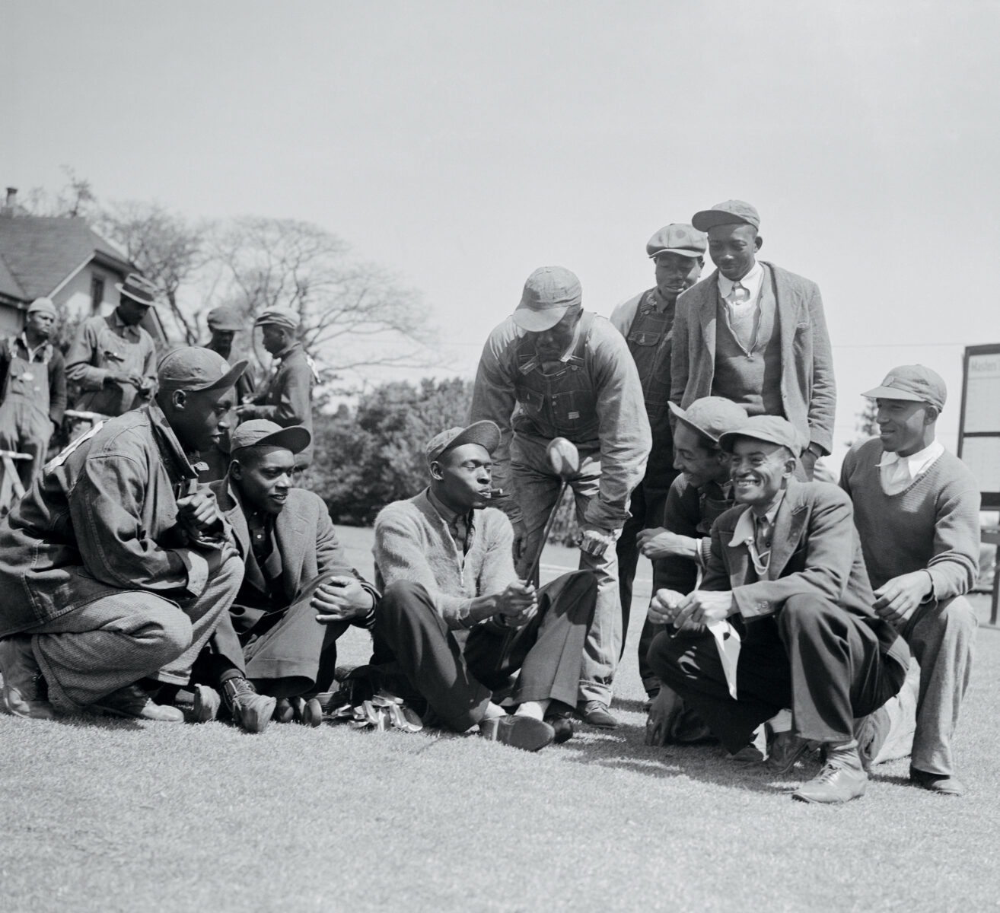
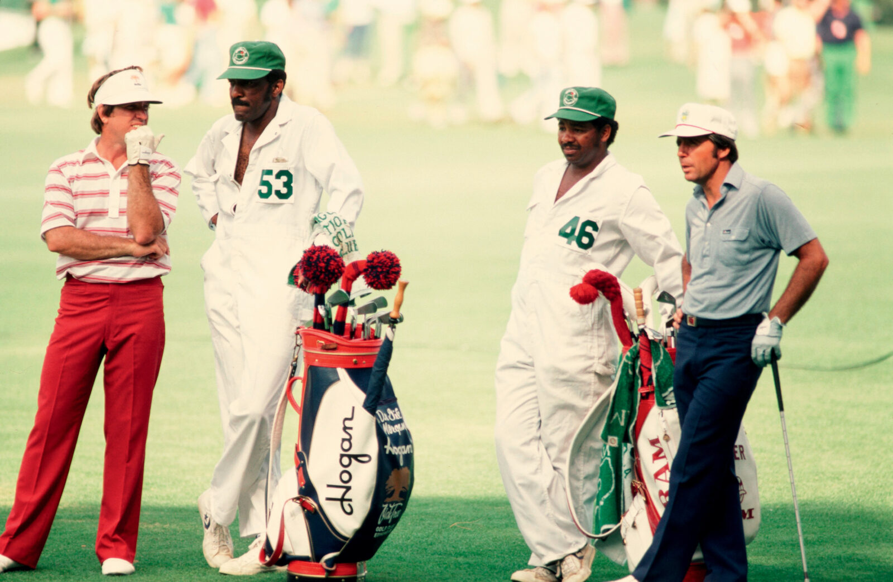
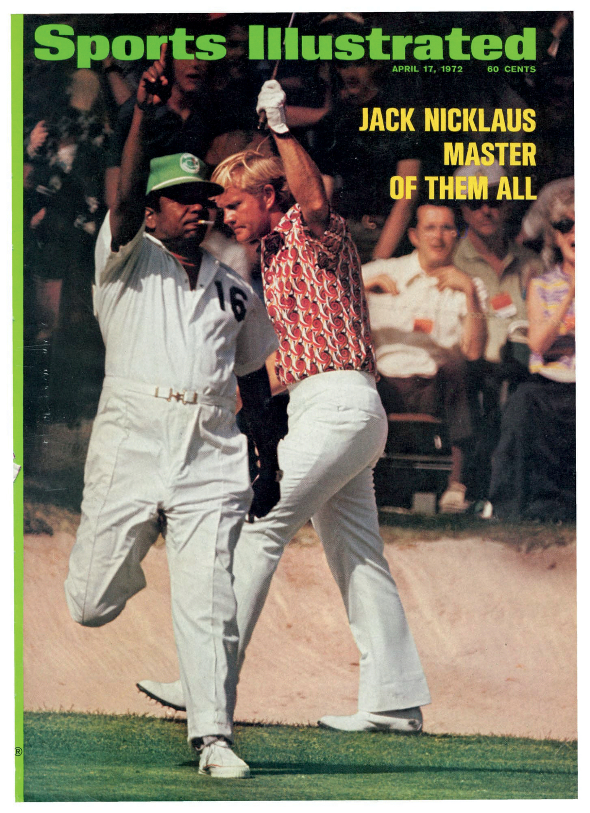

Who Were the Black Caddies of Augusta National? The Masters' Unsung Heroes
For almost fifty years, they carried the bags of golf legends but also masterminded victories from the tees to the holes. Then, with one decision, their lives shifted, and the legacy of their glory days went unheralded. Finally, that's changing.
Garden & Gun Magazine
Published April/May 2024
Nathaniel "Iron Man" Avery, one of Augusta National's legendary caddies, accompanies Arnold Palmer on the greens in 1965, alongside fellow caddies who were instrumental to the tournament's success. (Source: Garden&Gun)
In a small cardroom at the back of a municipal golf course clubhouse in Augusta, Georgia, a handful of old men gather and reminisce.
Do you remember when…? How about that time…? What about when Willie Peterson wound up on the cover of Sports Illustrated back in seventy-two? Wasn't that something?
All prompts, meant to bring back sweet memories. As they deal cards, the men talk about their golf games and trade good-natured jabs. They have known one another for more than sixty years, gave one another their nicknames.
Jim "Big Boy" Dent. Robert "Cigarette" Jones. Tommy "Burnt Biscuits" Bennett. Ike "Stabber" Choice.
"These men were no beasts of burden, but talented prognosticators who turned a racist policy, rooted in subjugation, into a livelihood and a source of esteem."
As long as ailments don't keep them confined to the house, they can be found here a couple of days a week, playing bid whist, ribbing one another, and recalling the days when they were part of Augusta National Golf Club's all-Black caddie corps, which players were required to use during the annual spring Masters Tournament. From the competition's inception in 1934, the caddies—born of Augusta and attuned to the land—could be a golfer's secret weapon coming around Amen Corner or for surviving other notoriously tricky holes like No. 4, Flowering Crab Apple, or No. 10, Camellia.
Caddies like Willie Peterson and Willie "Cemetery" Perteet became legends on the greens of Augusta National. (Source: Garden&Gun)
These men were no beasts of burden, but talented prognosticators who turned a racist policy, rooted in subjugation, into a livelihood and a source of esteem—one that, ironically, first added diversity to the game of golf. Men like Willie Peterson, who was on the bag for five of Jack Nicklaus's six Masters victories. Or Willie "Cemetery" Perteet, President Dwight D. Eisenhower's personal caddie at Augusta National during the fifties. When the club bent to pressure in 1982 and dropped the ban on outside caddies, the change rocked the corps—many of its members, including those who counted on that crucial tournament paycheck to tide them over till the seasonal club reopened in October, had to look for other work.
In the four decades since, recognition for the pivotal part these men played in the game, until recently, scarcely existed. Even today, they aren't heralded in the Augusta Museum of History, or mentioned in any of the historical milestones or records on the Masters' website. But as their numbers dwindle—of the seventy-six caddies enlisted in 1982, only twenty or so are still living—they're at long last beginning to be honored as what many of yesteryear's golfers always knew them to be: the Pride of Augusta. An elite group of men who changed the game forever.
Fruitland's Fertile Ground
For thousands of years, the Savannah River's overflowing waters dumped sand, silt, and detritus onto what would one day become Augusta, leaving fertile soil in their wake. By 1858, three hundred or so particularly arable acres landed in the hands of Louis Mathieu Edouard Berckmans and his son Prosper Jules Alphonse, Belgian immigrants and horticulturists with an interest in fruit and ornamental trees and shrubs. All told, the Berckmans cultivated more than three hundred varieties of peach trees alone and grew a million-plus fruit trees, turning Berckmans Nursery into the first large-scale plant source of its kind in the Southeast. A "horticulture Mecca," heralded the American Pomological Society, "serving the entire nation." Folks around Augusta simply called it "Fruitland."
More than seventy years later, in 1931, the Georgia-born golf champion Bobby Jones and his partner, Clifford Roberts, a Wall Street investment banker, bought the nursery's spread with plans to fashion a golf course from its landscape. Fruitland Manor became the clubhouse of the new Augusta National Golf Club. Many of the plant varieties the Berckmans developed and improved still grow on Augusta National's meticulously curated grounds.
The grounds of Augusta National, once Fruitland Nursery, became home to the Masters Tournament and its legendary Black caddie corps. (Source: Garden&Gun)
Immediately south, sandwiched between the Augusta Country Club and a campus of what is now Augusta University, lies Sand Hills, a Black neighborhood listed on the National Register of Historic Places where most of the caddies grew up. Much of their lives back then took place there "up on the hill," three miles from downtown as the crow flies, looming hundreds of feet above the then flood-prone city. Close enough to the city's seats of power that the residents could work in them, even if they could not walk through their front doors. Still, the community felt like "one big family," recalls Jim Dent, filled with adults who cared about his well-being and corrected his wrongdoings. But "the grandfather of caddies" came from even closer: Fruitland itself.
Pappy Stokes: The Grandfather of Caddies
Willie Lee Stokes was born in 1920 on a parcel of the property where his family tended cotton and corn. Eleven years later, in need of work, he headed to the golf course under construction, where men were hauling away trees and reshaping the terrain, making way for hazards and bunkers. "I remember cutting down trees on No. 10 and No. 11," Stokes, who died in 2006, once told the Augusta Chronicle. When Augusta National opened, in 1932, Stokes became the personal caddie for Clifford Roberts, who dubbed him "Pappy."
Stokes's roots on the land gave him an advantage—he knew how to read the fairways and greens better than others. Take Rae's Creek. Over the years, Augusta National has modified the course many times, but some water features are too ingrained to redirect. That was the secret of Rae's, a ten-mile-long stream—up to sixty feet wide and four feet deep—that still cuts through the course. Surrounded by azaleas and dogwoods, the waterway is a major element of the infamous three-hole stretch, filled with hazards, called Amen Corner. Stokes understood that every putt would break toward Rae's, the pull of gravity sending balls toward the lowest point on the property. Stokes also followed falling water: He became noted for studying how rain streamed across the greens, rendering the nuances of the topography visible.
Augusta National first put on what would come to be called the Masters Tournament in 1934 with its rule in place—attributed to Roberts—that golfers would always be white, and the caddies would always be Black. The segregated course had support from the top: From that same year until 1961, the Professional Golfers' Association of America had a "Caucasian-only" clause in its bylaws, preventing non-whites from membership and thus from competing on the PGA Tour.
"The caddies did not let a lot of their surroundings define who they were or allow that to be a ceiling on what they wanted to accomplish."
In 1938, the seventeen-year-old Stokes won his first Masters as a caddie for eventual Hall of Famer Henry Picard. He won again in 1948, with Claude Harmon; in 1951 and 1953, with the legendary Ben Hogan; and in 1956, with Jack Burke Jr. Stokes ties with latter-day caddies Steve Williams and Willie Peterson for the greatest number of Masters wins (five), but he remains the only one to do it with four different golfers.
A Brotherhood of Excellence
The world of caddying, naturally, dramatically changed in the forty years after the Masters ban was lifted. Jones says the biggest check he ever earned was "maybe forty-five hundred or forty-six hundred dollars." Now, Dent muses, "caddies make more money in one win than a man might see in his lifetime." Black faces on the greens, too, have all but disappeared. "We only have two Black people on the PGA Tour right now," Dent points out. "When I was out on tour, we had fourteen at one time." That's the irony of the Masters' all-Black-caddie rule: It was archaic and steeped in racism. And it also, the men admit, granted them entry to a gilded world where they had a chance to learn the game.
Living in Augusta means holding these kinds of multiple truths at once. The municipality is a place of great beauty, with flowering plants on every corner underscoring its nickname, Garden City. It also once fostered an atmosphere so oppressive that in 1970 it led to the largest urban uprising in the Deep South during the civil rights era, known as the Augusta Riot. And though the Black caddies played a pivotal part in the city's reputation as a golf mecca, they went without commemoration or celebration for much of the past four decades.
Caddie Willie Peterson shares the Sports Illustrated cover with Jack Nicklaus after their 1972 Masters triumph, bringing national attention to the Black caddies of Augusta. (Source: Sports Illustrated)
Even Black residents didn't always understand the significance of what the caddies had achieved. Leon Maben, who has collected oral histories of the Black caddies since 2019, grew up in downtown Augusta, away from the greens. Sports like baseball, basketball, and football ruled in his section of town. "Golf was for the guys up on the hill," he explains. "Growing up, we always said, 'Man, that's a white man's sport.'"
But then a business opportunity led the entrepreneur, then based in Atlanta, to the golf course, to sponsor an HBCU clinic and tournament, and there he began to reconsider the history of his Augusta childhood. Now, with the help of a local university student, Courtney Wilson, he interviews any caddies he can find in order to immortalize them. "This is Black history," he says. "Nowhere else could you say, 'Black people dominated this facet of the sport for fifty years.' That's what makes the story so interesting." He doesn't himself play golf, but Maben spends time at the Augusta Municipal Golf Course, known as the Patch, and its clubhouse and cardroom, where the men gather, to hear those stories—while he can.
Recognition at Last
The numbers of the old-school Black caddies have decreased, and recognition has come but lately. Lee Elder—a former caddie who also broke the Masters race barrier as a player, in 1975—died in 2021, not long after Augusta National and Paine College, an HBCU in Augusta, partnered to create endowed scholarships in his name. In 2023, Jariah Beard succumbed to cancer, and John Luther Elam Jr., a caddie who helped desegregate the Patch, died too.
The small Lucy Craft Laney Museum of Black History and Conference Center, housed in the former Augusta home of a prominent African American educator and activist, has also played a mighty part in recognizing the caddies. Since early 2023, on one weekend a month, the museum has presented "Men on the Bag: The Stories of Augusta's Famous Black Caddies." Through the artistic direction of the Augusta Mini Theatre, young actors portray three of the now-deceased iconic caddies. Corey Rogers, the Laney's executive director, wrote much of the script, taking cues from Men on the Bag, a book by Ward Clayton that delves into the caddies' backstories. Clayton will publish a revised version, The Legendary Caddies of Augusta National: Inside Stories from Golf 's Greatest Stage, in early April.
Even though now-gone greats like George "Fireball" Franklin, Nathaniel "Iron Man" Avery, John H. "Stovepipe" Gordon, and Frank "Marble Eye" Stokes may not appear in golf 's official record, they are celebrated throughout the museum. Six-foot-tall banners bearing photographs of caddies in their element, or in a moment of victory, frame the room. Here they get to live large.
"The caddies did not let a lot of their surroundings define who they were or allow that to be a ceiling on what they wanted to accomplish," Rogers says of the images. "Some people think that these men were performing this subservient role by toting the bag. It was much more complex than that. We don't want people to get the impression that these individuals were downtrodden. Some may be bitter or upset over the treatment and work conditions, but everybody's story is different, with many emotions in it. We want to tell each individual story and not paint things with a simplistic broad brush."
The Future: A New Generation
But that legacy isn't limited to the past. When asked about the future of Augusta's Black golfers, Bennett and Jones both point to one man: André Lacey II.
Lacey is Jim Dent's grandson, but he insists he came to the game of his own accord, without fully understanding his grandfather's place as a pioneer. Lacey is now forty; while he grew up "on the hill," by the time he was born, the heyday of the Black caddies had ended. He learned to play golf at what is now the E. W. Hagler Boys & Girls Club in downtown Augusta. After a rough patch in his twenties led to a divorce, he came back to the game, eventually becoming a PGA of America Golf Associate in 2015.
Now, when he's not working as an assistant men's and women's golf coach at Paine College, his grandfather's alma mater, he spends much of his time volunteering with youths, making sure they're aware of all of the business opportunities golf can provide. He runs a PGA Jr. League, a program he started with three kids that has now swelled to some sixty boys and girls at a time. Through his nonprofit, André Frantz Golf, he also provides free instruction, equipment, and other resources to people who want to learn more about the sport, lowering the economic barrier to access. "I take a lot of pride in being an ambassador and spreading the game," Lacey says. "Golf is a game for everyone to enjoy. I want to help as many people as I can."
The pride of Augusta is a double-headed, sunshine-colored cultivar of Gelsemium sempervirens, or what Augusta National Golf Club calls yellow jasmine. Others around these parts call it yellow jessamine.
The Fruitland horticulturists probably introduced the cultivar. Like the caddies and their ancestors, it existed on this land before Augusta National, a Southern plant then shipped around the world. Native to the terrain, it will use any challenge it encounters—fences, a loblolly—to gain a foothold. In the winter, the plant bronzes like a melanated body in the sun. When spring arrives, the buds will be in bloom, alongside the course's emblematic azaleas, just in time for the Masters, which begin practice rounds in early April.
That week, some fifteen hundred private jets will fly into the city, many of them on a flight path that leads right over the Patch, the propellers close enough for people on the ground to feel their wind. While the crowds surge and roar behind the ropes at Augusta National and a golfer gains a green jacket, André Lacey II will be mentoring local young people and teaching the fundamentals at his Nike Junior Golf Camp nearby.
In his element, Lacey is loose and expressive. Six foot one, sure-footed and graceful, with a radiant smile that seems to amplify the warmth of his voice as he talks to the group in front of him. "There's no other sport as natural as golf," Lacey will explain. "That's why golf transcends from one country to the next. It's the only life sport, where you can play it at a hundred years old."
The camp will end at noon, and depending on what the sky looks like, Lacey might head to the Patch afterward, to the beloved clubhouse with its treasured card games. Perhaps he'll even join the old caddies for a round. "Every day is a good day," one might remind the other. And as they prepare to play, the private jets will rocket over their heads on their way to somewhere else, the aircraft disappearing beyond the horizon as the Black golfers of Augusta shoulder their bags and head toward the first tee.
Related Stories
Endangered Species in Florida
A federally endangered species was released on private land in Florida—a significant conservation milestone.
Read MoreChincoteague Pony Swim
A century on, the Chincoteague Pony Swim still sparks unbridled joy for visitors and locals alike.
Read MoreMasters Tournament Milestones
Explore the official archives and historical milestones of golf's most prestigious tournament.
Read MoreCarl Jackson is celebrating 50 years as an Augusta bagman
The Guardian's profile of the legendary caddy Carl Jackson who shaped the Masters tournament.
Read More